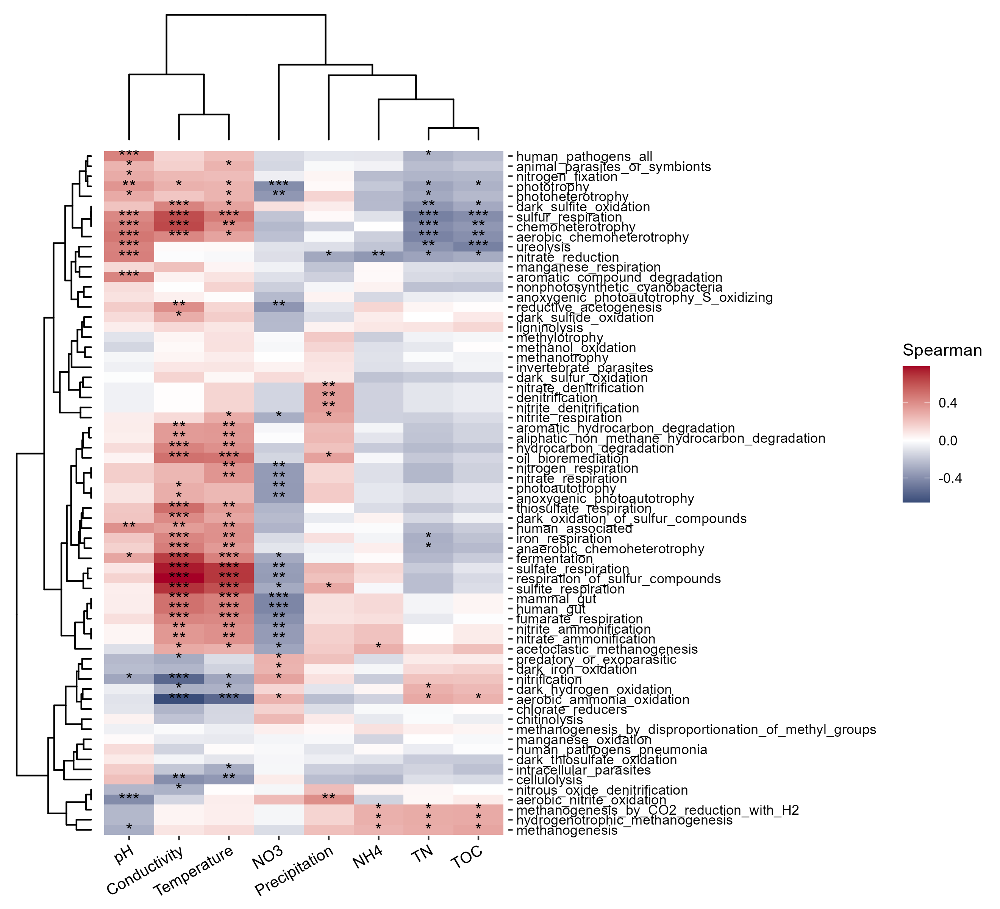

Chapter 7 Explainable class
The trans_env and trans_func classes are placed into the section ‘Explainable class’, as environmental factors and microbial functions can be generally applied to explain microbial community structure and assembly.
7.1 trans_env class
There may be some NA (missing value) in the user’s env data.
If so, please add complete_na = TRUE for the interpolation when creating a trans_env object.
7.1.1 Example
Creating trans_env object has at least two ways. The following is using additional environmental data which is not in the microtable object.
# add_data is used to add the environmental data
t1 <- trans_env$new(dataset = dataset, add_data = env_data_16S[, 4:11])## Env data is stored in object$data_env ...Maybe a more general way is to directly use the data from sample_table of your microtable object. To show this operation, we first merge additional table into sample_table to generate a new microtable object.
new_test <- clone(dataset)
new_test$sample_table <- data.frame(new_test$sample_table, env_data_16S[rownames(new_test$sample_table), ])
# now new_test$sample_table has the whole data
new_test## microtable-class object:
## sample_table have 90 rows and 15 columns
## otu_table have 12766 rows and 90 columns
## tax_table have 12766 rows and 7 columns
## phylo_tree have 12766 tips
## Taxa abundance: calculated for Kingdom,Phylum,Class,Order,Family,Genus,Species
## Alpha diversity: calculated for Observed,Chao1,se.chao1,ACE,se.ACE,Shannon,Simpson,InvSimpson,Fisher,Pielou,Coverage
## Beta diversity: calculated for bray,jaccardNow let’s use env_cols to select the required columns from sample_table in the microtable object.
From v1.0.0, the parameter standardize = TRUE is available to standardize each variable.
t1 <- trans_env$new(dataset = new_test, env_cols = 8:15)## Env data is stored in object$data_env ...Generally, it is beneficial to analyze environmental variables in order to better use more methods.
The cal_diff function is used to test the significance of variables across groups like we have shown in trans_alpha and trans_diff class parts.
# use Wilcoxon Rank Sum Test as an example
t1$cal_diff(group = "Group", method = "wilcox")
head(t1$res_diff)## The result is stored in object$res_diff ...| Comparison | Measure | Group | P.adj | Significance |
|---|---|---|---|---|
| IW - CW | Temperature | CW | 3.283e-10 | *** |
| IW - TW | Temperature | TW | 0.0001958 | *** |
| CW - TW | Temperature | CW | 3.283e-10 | *** |
| IW - CW | Precipitation | CW | 5.239e-09 | *** |
| IW - TW | Precipitation | IW | 0.07758 | ns |
| CW - TW | Precipitation | CW | 4.002e-07 | *** |
| IW - CW | TOC | IW | 0.4687 | ns |
Let’s perform the ANOVA and show the letters in the box plot. We use list to store all the plots for each factor and plot them together.
t1$cal_diff(method = "anova", group = "Group")
# place all the plots into a list
tmp <- list()
for(i in colnames(t1$data_env)){
tmp[[i]] <- t1$plot_diff(measure = i, add_sig_text_size = 5, xtext_size = 12) + theme(plot.margin = unit(c(0.1, 0, 0, 1), "cm"))
}
plot(gridExtra::arrangeGrob(grobs = tmp, ncol = 3))
From v0.12.0, trans_env class supports the differential test of groups within each group by using the by_group parameter in cal_diff function.
t1$cal_diff(group = "Type", by_group = "Group", method = "anova")
t1$plot_diff(measure = "pH", add_sig_text_size = 5)Then we show the autocorrelations among variables.
# require GGally package to be installed
t1$cal_autocor()
For different groups, please use group parameter to show the distributions of variables and the autocorrelations across groups.
t1$cal_autocor(group = "Group")
Then let’s show the RDA analysis (db-RDA and RDA).
# use bray-curtis distance for dbRDA
t1$cal_ordination(method = "dbRDA", use_measure = "bray")
# show the orginal results
t1$trans_ordination()
t1$plot_ordination(plot_color = "Group")
# the main results of RDA are related with the projection and angles between arrows
# adjust the length of the arrows to show them better
t1$trans_ordination(adjust_arrow_length = TRUE, max_perc_env = 1.5)
# t1$res_rda_trans is the transformed result for plotting
t1$plot_ordination(plot_color = "Group")From v0.14.0, the function cal_ordination_anova is implemented to check the significance of the ordination model instead of the encapsulation in cal_ordination.
Furthermore, the function cal_ordination_envfit can be used to get the contribution of each variables to the model.
t1$cal_ordination_anova()
t1$cal_ordination_envfit()Then, let’s try to do RDA at the Genus level.
# use Genus
t1$cal_ordination(method = "RDA", taxa_level = "Genus")
# select 10 features and adjust the arrow length
t1$trans_ordination(show_taxa = 10, adjust_arrow_length = TRUE, max_perc_env = 1.5, max_perc_tax = 1.5, min_perc_env = 0.2, min_perc_tax = 0.2)
# t1$res_rda_trans is the transformed result for plot
t1$plot_ordination(plot_color = "Group")
For more visualization styles, run the following examples.
t1$plot_ordination(plot_color = "Group", plot_shape = "Group")
t1$plot_ordination(plot_color = "Group", plot_shape = "Group", plot_type = c("point", "ellipse"))
t1$plot_ordination(plot_color = "Group", plot_shape = "Group", plot_type = c("point", "centroid"))
t1$plot_ordination(plot_color = "Group", plot_shape = "Group", plot_type = c("point", "chull"))
t1$plot_ordination(plot_color = "Group", plot_shape = "Group", plot_type = c("point", "ellipse", "centroid"))
t1$plot_ordination(plot_color = "Group", plot_shape = "Group", plot_type = c("point", "chull", "centroid"), add_sample_label = "SampleID")
t1$plot_ordination(plot_color = "Group", plot_shape = "Group", plot_type = "centroid", centroid_segment_alpha = 0.9, centroid_segment_size = 1, centroid_segment_linetype = 1)
t1$plot_ordination(plot_color = "Type", plot_type = c("point", "centroid"), centroid_segment_linetype = 1)Mantel test can be used to check whether there is significant correlations between environmental variables and distance matrix.
t1$cal_mantel(use_measure = "bray")
# return t1$res_mantel
head(t1$res_mantel)## The result is stored in object$res_mantel ...| Variables | Correlation coefficient | p.value | p.adjusted | Significance |
|---|---|---|---|---|
| Temperature | 0.452 | 0.001 | 0.002 | ** |
| Precipitation | 0.2791 | 0.001 | 0.002 | ** |
| TOC | 0.13 | 0.003 | 0.004 | ** |
| NH4 | -0.05539 | 0.926 | 0.926 | |
| NO3 | 0.06758 | 0.05 | 0.05714 | |
| pH | 0.4085 | 0.001 | 0.002 | ** |
| Conductivity | 0.2643 | 0.001 | 0.002 | ** |
| TN | 0.1321 | 0.002 | 0.0032 | ** |
# mantel test for different groups
t1$cal_mantel(by_group = "Group", use_measure = "bray")
# partial mantel test
t1$cal_mantel(partial_mantel = TRUE)For the combination of mantel test and correlation heatmap, please see another example (https://chiliubio.github.io/microeco_tutorial/other-examples-1.html#mantel-test-correlation-heatmap).
The correlations between environmental variables and taxa are important in analyzing and inferring the factors affecting community structure.
Let’s first perform a correlation heatmap using relative abundance data at Genus level with the cal_cor function.
The parameter p_adjust_type can control the p value adjustment type.
t1 <- trans_env$new(dataset = dataset, add_data = env_data_16S[, 4:11])## Env data is stored in object$data_env ...# 'p_adjust_type = "Env"' means p adjustment is performed for each environmental variable separately.
t1$cal_cor(use_data = "Genus", p_adjust_method = "fdr", p_adjust_type = "Env")## The correlation result is stored in object$res_cor ...# return t1$res_corThen, we can plot the correlation results using plot_cor function.
# default ggplot2 method with clustering
t1$plot_cor()There are too many genera. We can use the filter_feature parameter in plot_cor to filter some taxa that do not have any significance < 0.001.
# filter genera that donot have at least one ***
t1$plot_cor(filter_feature = c("", "*", "**"))Sometimes, if the user wants to do the correlation analysis between the environmental factors and some important taxa detected in the biomarker analysis, please use other_taxa parameter in cal_cor function.
# first create trans_diff object as a demonstration
t2 <- trans_diff$new(dataset = dataset, method = "rf", group = "Group", taxa_level = "Genus")
# then create trans_env object
t1 <- trans_env$new(dataset = dataset, add_data = env_data_16S[, 4:11])
# use other_taxa to select taxa you need
t1$cal_cor(use_data = "other", p_adjust_method = "fdr", other_taxa = t2$res_diff$Taxa[1:40])
t1$plot_cor()
The pheatmap method is also available. Note that, besides the color_vector parameter, color_palette can also be used to control color palette with customized colors.
# clustering heatmap; require pheatmap package
# Let's take another color pallete
t1$plot_cor(pheatmap = TRUE, color_palette = rev(RColorBrewer::brewer.pal(n = 9, name = "RdYlBu")))Sometimes, if it is needed to study the correlations between environmental variables and taxa for different groups, by_group parameter can be used for this goal.
# calculate correlations for different groups using parameter by_group
t1$cal_cor(by_group = "Group", use_data = "other", p_adjust_method = "fdr", other_taxa = t2$res_diff$Taxa[1:40])
# return t1$res_cor
t1$plot_cor()
If the user is concerned with the relationship between environmental factors and alpha diversity, please use add_abund_table parameter in the cal_cor function.
t1 <- trans_env$new(dataset = dataset, add_data = env_data_16S[, 4:11])
# use add_abund_table parameter to add the extra data table
t1$cal_cor(add_abund_table = dataset$alpha_diversity)
# try to use ggplot2 with clustering plot
# require ggtree and aplot packages to be installed (https://chiliubio.github.io/microeco_tutorial/intro.html#dependence)
t1$plot_cor(cluster_ggplot = "both")
The function plot_scatterfit in trans_env class is designed for the scatter plot, adding the fitted line and statistics of correlation or regression.
# use pH and bray-curtis distance
# add correlation statistics
t1$plot_scatterfit(
x = "pH",
y = dataset$beta_diversity$bray[rownames(t1$data_env), rownames(t1$data_env)],
type = "cor",
point_size = 3, point_alpha = 0.1,
label.x.npc = "center", label.y.npc = "bottom",
x_axis_title = "Euclidean distance of pH",
y_axis_title = "Bray-Curtis distance"
)# regression with type = "lm", use group parameter for different groups
t1$plot_scatterfit(
x = dataset$beta_diversity$bray[rownames(t1$data_env), rownames(t1$data_env)],
y = "pH",
type = "lm",
group = "Group",
group_order = c("CW", "TW", "IW"),
point_size = 3, point_alpha = 0.3, line_se = FALSE, line_size = 1.5, shape_values = c(16, 17, 7),
y_axis_title = "Euclidean distance of pH", x_axis_title = "Bray-Curtis distance"
) + theme(axis.title = element_text(size = 17))
Other examples.
t1 <- trans_env$new(dataset = new_test, env_cols = 8:15)
# with forward selection in RDA
t1$cal_ordination(method = "dbRDA", feature_sel = TRUE)
# CCA, canonical correspondence analysis
t1$cal_ordination(method = "CCA", taxa_level = "Genus")
t1$trans_ordination(adjust_arrow_length = TRUE)
t1$plot_ordination(plot_color = "Group", plot_shape = "Group", plot_type = c("point", "ellipse"))
# correlation analysis without p adjustment
t1$cal_cor(use_data = "Genus", p_adjust_method = "none", use_taxa_num = 30)
# correlation heatmap with clustering based on the ggplot2 and aplot packages
g1 <- t1$plot_cor(cluster_ggplot = "both")
g1
# clustering heatmap with ggplot2 depends on aplot package
# to change the detail in the plot, please manipulate each element of g1
g1[[1]]
# standardize x axis text format
g1[[1]] <- g1[[1]] + scale_x_discrete(labels = c(NH4 = expression(NH[4]^'+'-N), NO3 = expression(NO[3]^'-'-N)))
g1[[1]]
g1
ggplot2::ggsave("test.pdf", g1, width = 8, height = 6)
# For regression, lm_equation = FALSE can be applied to not display the equation.
t1$plot_scatterfit(x = 1, y = 2, type = "lm", lm_equation = TRUE)
# use line_alpha to adjust the transparency of the confidence interval
t1$plot_scatterfit(x = 1, y = 2, type = "lm", lm_equation = FALSE, line_alpha = 0.3)
t1$plot_scatterfit(x = 1, y = 2, type = "lm", point_alpha = .3, line_se = FALSE)
t1$plot_scatterfit(x = 1, y = 2, type = "lm", line_se_color = "grey90", label_sep = ",", label.x.npc = "center", label.y.npc = "bottom")
t1$plot_scatterfit(x = 1, y = 2, line_se = FALSE, pvalue_trim = 3, cor_coef_trim = 3)
t1$plot_scatterfit(x = "pH", y = "TOC", type = "lm", group = "Group", line_se = FALSE, label.x.npc = "center",
shape_values = 1:3, x_axis_title = "pH", y_axis_title = "TOC")
# correlation between relative abundance of Genus-Arthrobacter and pH
tmp <- unlist(dataset$taxa_abund$Genus["k__Bacteria|p__Actinobacteria|c__Actinobacteria|o__Micrococcales|f__Micrococcaceae|g__Arthrobacter", ])
t1$plot_scatterfit(x = "pH", y = tmp, point_size = 3, point_alpha = 0.3,
y_axis_title = "Arthrobacter", x_axis_title = "pH")7.1.2 Key points
- complete_na parameter in trans_env$new: used to fill the NA (missing value) of the environmental data based on the mice package.
- env_cols parameter in trans_env$new: select the variables from sample_table of your microtable object.
- add_abund_table parameter in cal_cor: other customized data can be also provided for the correlation analysis.
- use_cor parameter in plot_scatterfit: both the correlation and regression are available in this function.
- cal_mantel(): partial_mantel = TRUE can be used for partial mantel test.
- plot_ordination(): use plot_type parameter to select point types and env_nudge_x and taxa_nudge_x (also _y) to adjust the text positions.
7.2 trans_func class
Ecological researchers are usually interested in the the funtional profiles of microbial communities, because functional or metabolic data is powerful to explain the structure and dynamics of microbial communities. As metagenomic sequencing is complicated and expensive, using amplicon sequencing data to predict functional profiles is an alternative choice. Several software are often used for this goal, such as PICRUSt (Langille et al. 2013), Tax4Fun (Aßhauer et al. 2015) and FAPROTAX (Stilianos Louca et al. 2016; S. Louca, Parfrey, and Doebeli 2016). These tools are great to be used for the prediction of functional profiles based on the prokaryotic communities from sequencing results. In addition, it is also important to obtain the traits or functions for each taxa, not just the whole profile of communities. FAPROTAX database is a collection of the traits and functions of prokaryotes based on the known research results published in books and literatures. We match the taxonomic information of prokaryotes against this database to predict the traits of prokaryotes on biogeochemical roles. The NJC19 database (Lim et al. 2020) is also available for animal-associated prokaryotic data, such as human gut microbiota. We also implement the FUNGuild (Nguyen et al. 2016) and FungalTraits (Põlme et al. 2020) databases to predict the fungal traits. The idea identifying prokaryotic traits and functional redundancy was initially inspired by our another study (C. Liu et al. 2022).
7.2.1 Example
We first identify/predict traits of taxa with the prokaryotic example data.
# create object of trans_func
t2 <- trans_func$new(dataset)
# mapping the taxonomy to the database
# this can recognize prokaryotes or fungi automatically if the names of taxonomic levels are standard.
# for fungi example, see https://chiliubio.github.io/microeco_tutorial/other-dataset.html#fungi-data
# default database for prokaryotes is FAPROTAX database
t2$cal_spe_func(prok_database = "FAPROTAX")## FAPROTAX v1.2.6. Please also cite the original FAPROTAX paper: Louca et al. (2016).## Decoupling function and taxonomy in the global ocean microbiome. Science, 353(6305), 1272.## The functional binary table is stored in object$res_spe_func ...# return t2$res_spe_func, 1 represent trait exists, 0 represent no or cannot confirmed.t2$res_spe_func[1:5, 1:2]| methanotrophy | acetoclastic_methanogenesis | |
|---|---|---|
| OTU_4272 | 0 | 0 |
| OTU_236 | 0 | 0 |
| OTU_399 | 0 | 0 |
| OTU_1556 | 0 | 0 |
| OTU_32 | 0 | 0 |
The percentages of the OTUs having the same trait can reflect the functional redundancy of this function in the community.
# calculate the percentages for communities
# here do not consider the abundance
t2$cal_spe_func_perc(abundance_weighted = FALSE)## The result table is stored in object$res_spe_func_perc ...# t2$res_spe_func_perc[1:5, 1:2]| methanotrophy | acetoclastic_methanogenesis | |
|---|---|---|
| S1 | 0.39 | 0.04 |
| S2 | 0.27 | 0 |
| S3 | 0.48 | 0 |
| S4 | 0.48 | 0 |
| S5 | 0.56 | 0 |
From v1.3.0, the trans_spe_func_perc function is implemented to get the long-format table for more flexible manipulation, e.g., filtering and grouping.
The return res_spe_func_perc_trans in the object is the table for the following visualization.
Note that this step is not necessary as plot_spe_func_perc function can automatically invoke this function if res_spe_func_perc_trans is not found.
t2$trans_spe_func_perc()
t2$plot_spe_func_perc()For the differential test of the abundance percentages across groups, please move to another part (https://chiliubio.github.io/microeco_tutorial/other-examples-1.html#faprotax-differential-test). Then we take another example to show the percentages of the OTUs for each trait in network modules.
# construct a network for the example
network <- trans_network$new(dataset = dataset, cal_cor = "base", taxa_level = "OTU", filter_thres = 0.0001, cor_method = "spearman")
network$cal_network(p_thres = 0.01, COR_cut = 0.7)
network$cal_module()
# convert module info to microtable object
meco_module <- network$trans_comm(use_col = "module")
meco_module_func <- trans_func$new(meco_module)
meco_module_func$cal_spe_func(prok_database = "FAPROTAX")
meco_module_func$cal_spe_func_perc(abundance_weighted = FALSE)
meco_module_func$plot_spe_func_perc(order_x = paste0("M", 1:10))# If you want to change the group list, reset the list t2$func_group_list
t2$func_group_list
# use show_prok_func to see the detailed information of prokaryotic traits
t2$show_prok_func("methanotrophy")Then we try to correlate the percentage data in res_spe_func_perc to environmental variables.
t3 <- trans_env$new(dataset = dataset, add_data = env_data_16S[, 4:11])
t3$cal_cor(add_abund_table = t2$res_spe_func_perc, cor_method = "spearman")
t3$plot_cor(pheatmap = TRUE)
Tax4Fun (Aßhauer et al. 2015) requires a strict input file format associated with the taxonomic information. To analyze the trimmed or changed OTU data in R with Tax4Fun, we provide a link to the Tax4Fun functional prediction. Please check out the dependence part https://chiliubio.github.io/microeco_tutorial/intro.html#tax4fun for installing Tax4Fun package and download SILVA123 ref data.
t1 <- trans_func$new(dataset)
# https://chiliubio.github.io/microeco_tutorial/intro.html#tax4fun for the installation description
# and provide the file path of SILVA123
t1$cal_tax4fun(folderReferenceData = "./SILVA123")
# return two files: t1$tax4fun_KO: KO file; t1$tax4fun_path: pathway file.
# t1$tax4fun_KO$Tax4FunProfile[1:5, 1:2]| K00001; alcohol dehydrogenase [EC:1.1.1.1] | K00002; alcohol dehydrogenase (NADP+) [EC:1.1.1.2] | |
|---|---|---|
| S1 | 0.0004823 | 5.942e-06 |
| S2 | 0.0005266 | 4.017e-06 |
| S3 | 0.0005054 | 6.168e-06 |
| S4 | 0.0005109 | 5.888e-06 |
| S5 | 0.0005083 | 5.547e-06 |
We further analyze the abundance of predicted metabolic pathways.
# must transpose to taxa row, sample column
pathway_file <- t1$tax4fun_path$Tax4FunProfile %>% t %>% as.data.frame
# filter rownames, only keep ko+number
rownames(pathway_file) %<>% gsub("(^.*);\\s.*", "\\1", .)
# load the pathway hierarchical metadata
data(Tax4Fun2_KEGG)
# further create a microtable object, familiar?
func1 <- microtable$new(otu_table = pathway_file, tax_table = Tax4Fun2_KEGG$ptw_desc, sample_table = t1$sample_table)
print(func1)## microtable-class object:
## sample_table have 90 rows and 4 columns
## otu_table have 284 rows and 90 columns
## tax_table have 444 rows and 3 columnsNow, we need to trim data and calculate abundance.
func1$tidy_dataset()
# calculate abundance automatically at three levels: Level.1, Level.2, Level.3
func1$cal_abund()## The result is stored in object$taxa_abund ...print(func1)## microtable-class object:
## sample_table have 90 rows and 4 columns
## otu_table have 282 rows and 90 columns
## tax_table have 282 rows and 3 columns
## Taxa abundance: calculated for Level.1,Level.2,Level.3Then, we can plot the abundance.
# bar plot at Level.1
func2 <- trans_abund$new(func1, taxrank = "Level.1", groupmean = "Group")
func2$plot_bar(legend_text_italic = FALSE)
We can also do something else. For example, we can use lefse to test the differences of the abundances and find the important enriched pathways across groups.
func2 <- trans_diff$new(dataset = func1, method = "lefse", group = "Group", alpha = 0.05, lefse_subgroup = NULL)
func2$plot_diff_bar(threshold = 3, width = 0.8)
Tax4Fun2 (Wemheuer et al. 2020) is another R package for the prediction of functional profiles of prokaryotic communities from 16S rRNA gene sequences.
It also provides two indexes for the evaluation of functional gene redundancies.
If the user want to use Tax4Fun2 method, the representative fasta file is necessary to be added in the microtable object.
Please check out https://chiliubio.github.io/microeco_tutorial/intro.html#tax4fun2 to see
how to read fasta file with read.fasta of seqinr package or readDNAStringSet of Biostrings package.
Please also see https://chiliubio.github.io/microeco_tutorial/intro.html#tax4fun2 for downloading ncbi-blast and Ref99NR/Ref100NR.
For windows system, ncbi-blast-2.5.0+ is recommended since other versions can not operate well.
# first delete the dataset created before
rm(dataset)
# load the example dataset from microeco package as there is the rep_fasta object in it
data(dataset)
dataset
t1 <- trans_func$new(dataset)
# create a directory for result and log files
dir.create("test_prediction")
# https://chiliubio.github.io/microeco_tutorial/intro.html#tax4fun2 for installation
# ignore blast_tool_path parameter if blast tools have been in path
# the function can search whether blast tool directory is in the path, if not, automatically use provided blast_tool_path parameter
t1$cal_tax4fun2(blast_tool_path = "ncbi-blast-2.5.0+/bin", path_to_reference_data = "Tax4Fun2_ReferenceData_v2",
database_mode = "Ref99NR", path_to_temp_folder = "test_prediction")
# prepare feature table and metadata
data(Tax4Fun2_KEGG)
# create a microtable object for pathways
func2 <- microtable$new(otu_table = t1$res_tax4fun2_pathway, tax_table = Tax4Fun2_KEGG$ptw_desc, sample_table = dataset$sample_table)
func2$tidy_dataset()
func2$cal_abund()
# calculate functional redundancies
t1$cal_tax4fun2_FRI()7.2.2 Key points
- blast_tool_path parameter in cal_tax4fun2: if the blast tool has been in ‘environment variable’ of computer, it is ok to use blast_tool_path = NULL
- blast version: tax4fun2 require NCBI blast tool. However, some errors often come from the latest versions (https://www.biostars.org/p/413294/). An easy solution is to use previous version (such as v2.5.0).